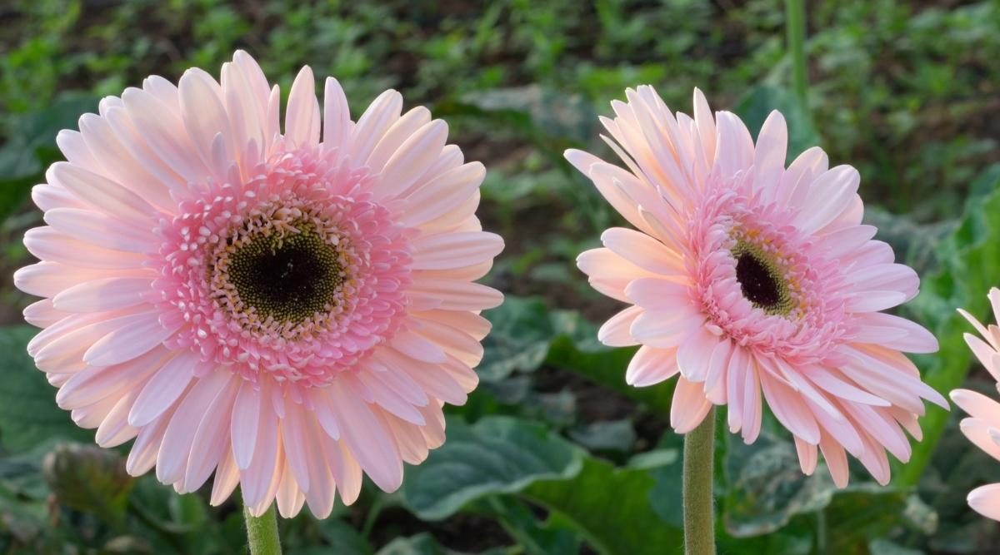

|  |
Orange can bring cheer and brightness to your garden. Popular with both spring and fall blooms, this color is sure to bring a smile to your face all year round. Check out the list below to find out more about how to add some brightness to your garden. Be sure to read the growing zone, as well as the sun and soil needs to make sure you have a fitting space to keep blooms healthy |